18 / MECHANICAL DESIGN
NYU Hyperloop Pod
Mechanical design inside a 20+ member team. Thirty-plus custom components, each drawn to ASME Y14.5 and carried through review until it cleared for fabrication.
- Role
- Mechanical Design Engineer, one of a 20+ member multidisciplinary team
- Context
- NYU Hyperloop Team, NYU Tandon, Jan – May 2026
- Tools
- SOLIDWORKS part and assembly modelling, ASME Y14.5 drafting, design reviews, engineering BOM
- Scope
- Chassis, four double-wishbone corners, coilovers, wheel hubs and linear motor, in a 307 × 171 × 332 mm envelope
- Output
- 30+ custom components modelled and drawn, interferences found in the 3D model and resolved in review
- Skills
- SOLIDWORKS
- ASME Y14.5
- Assembly modelling
- Interference checking
- Engineering BOM
- Design reviews
I modelled and revised drawings for more than thirty custom components to ASME Y14.5, carrying each one through review comments until it cleared for fabrication. The parts below are mine: the suspension bearing stack, the coilover mount, the wheel hub and the weldment pieces that tie them together.
Most of the work was coordination. On a 20+ member multidisciplinary team the mechanical envelope is shared with electrical and structural, so I checked routing and installation clearances against the 3D model, found the interferences there rather than on the bench, and resolved them in design reviews. I maintained the engineering bill of materials, the assembly drawings and the design rationale the team worked from across sprint reviews.
These are SOLIDWORKS model views of my own parts. The pod is a team project; the components shown here are the ones I designed.
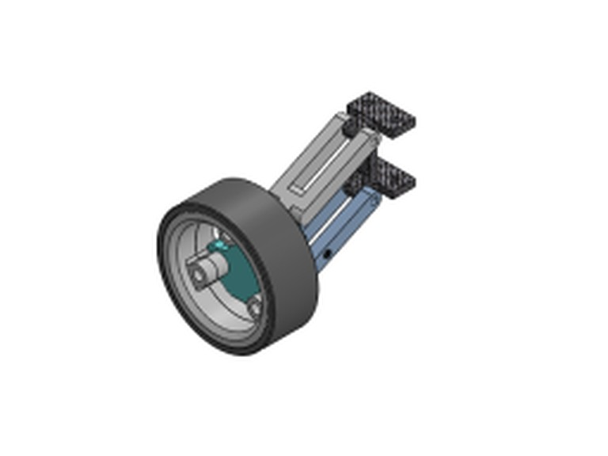
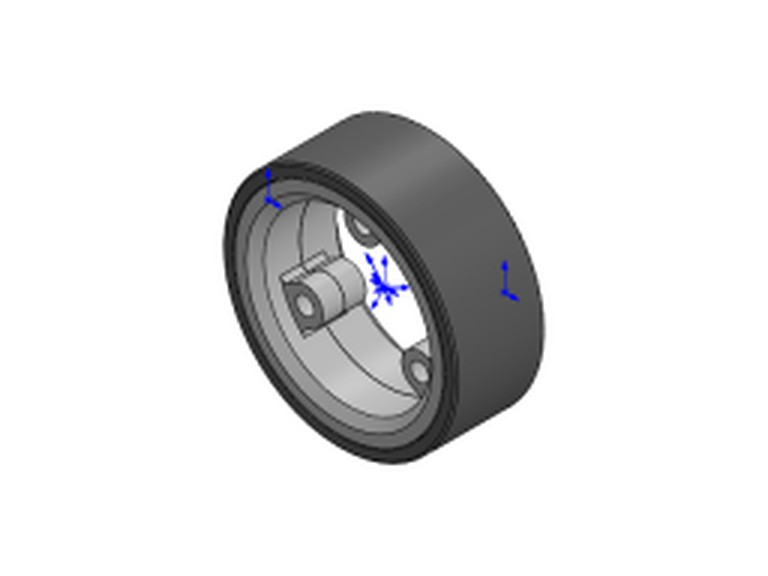
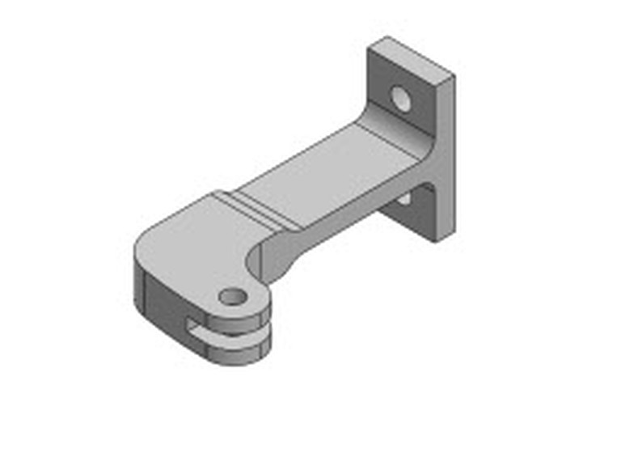
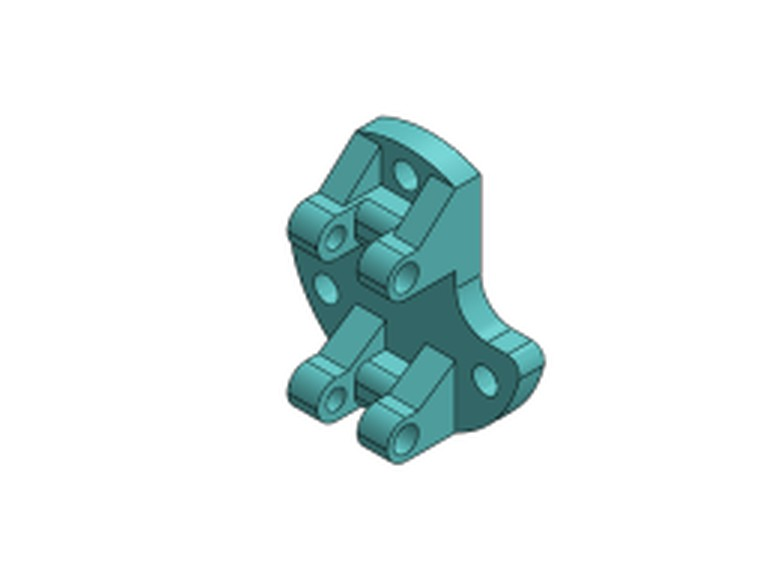
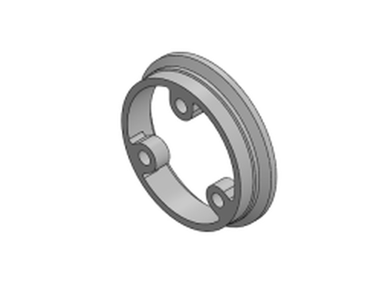
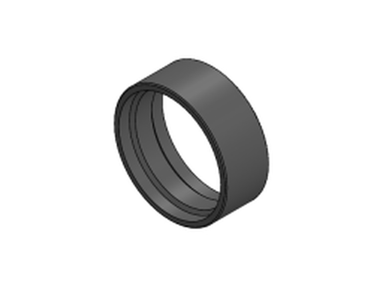
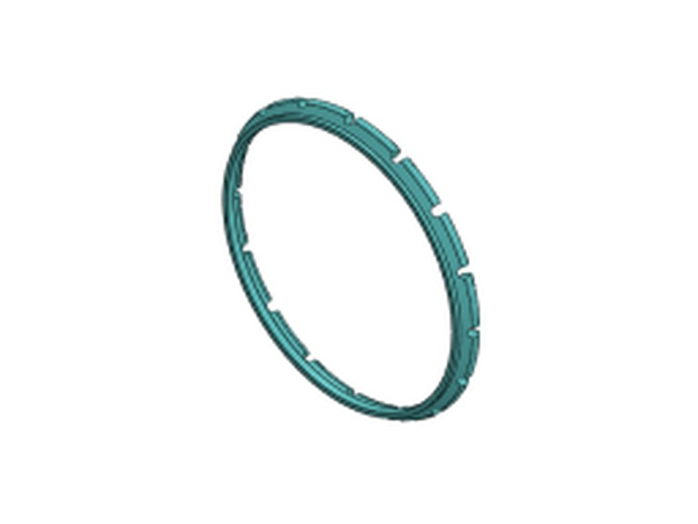
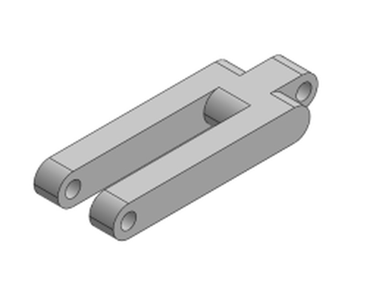
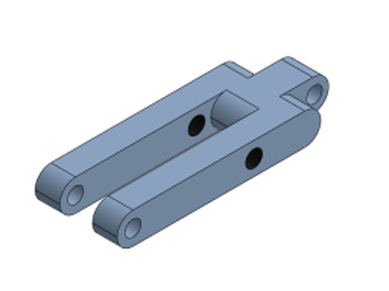
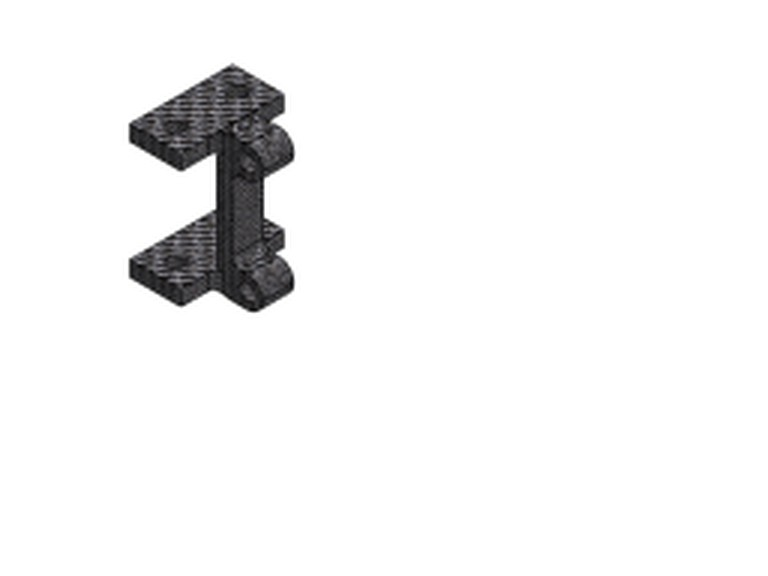
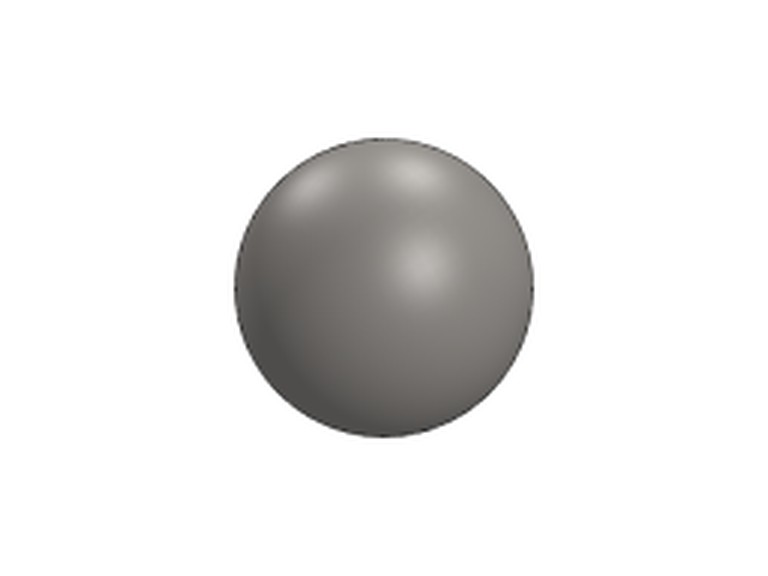